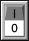
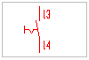
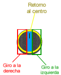
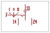
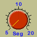
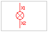
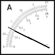
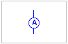

Los símbolos utilizados para su representación en los esquemas es:
 Pulsador
de marcha
Pulsador
de marcha
 Pulsador de parada
Pulsador de parada
 Pulsador
de doble cámara
Pulsador
de doble cámara



Elementos Indicadores:



El símbolo utilizado en los esquemas es: 
| <<--Volver |
¡IMPORTANTE!
En
el itinerario EVALUACIÓN, está desactivada la simulación
de circuitos.
Por lo tanto, todos los elementos de actuación
e
indicación no son operativos.
En este modo, la ventana "Cuadro Electrico" no se muestra.